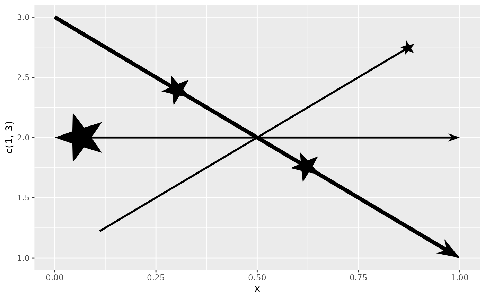
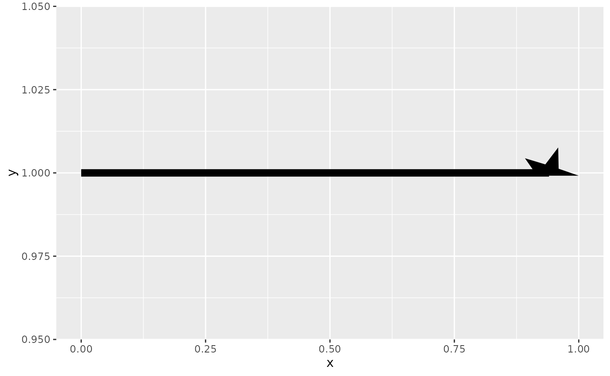
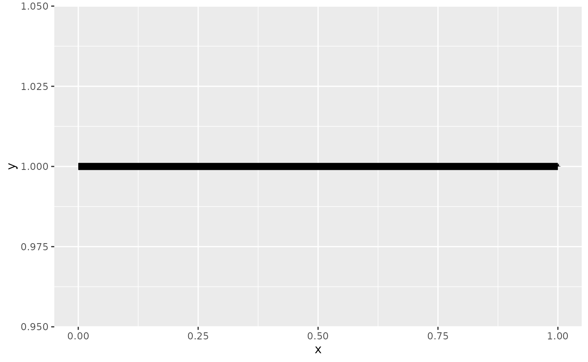
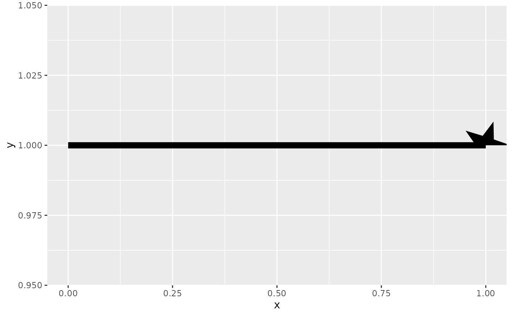
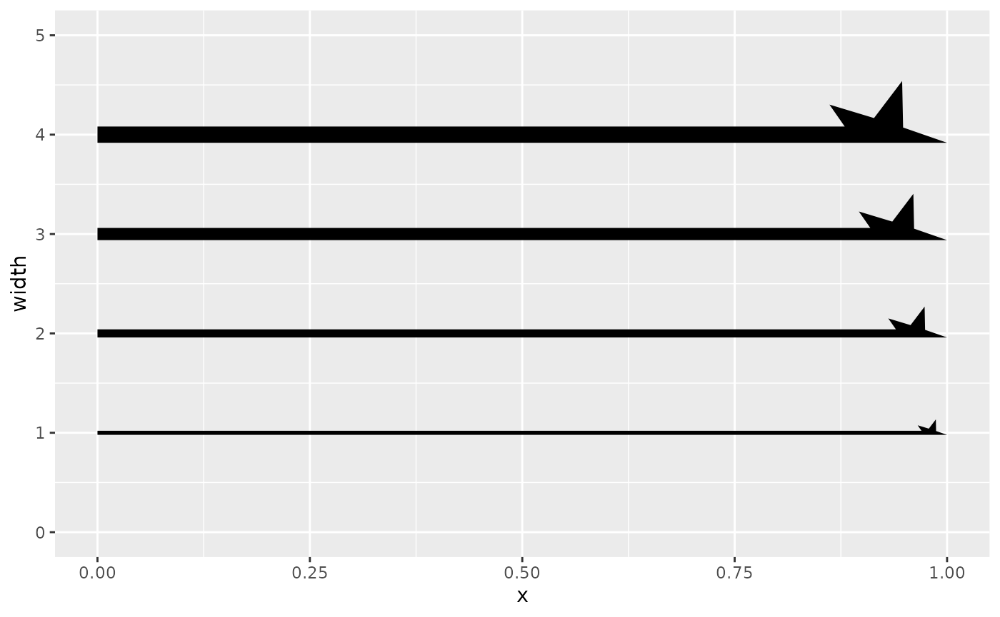
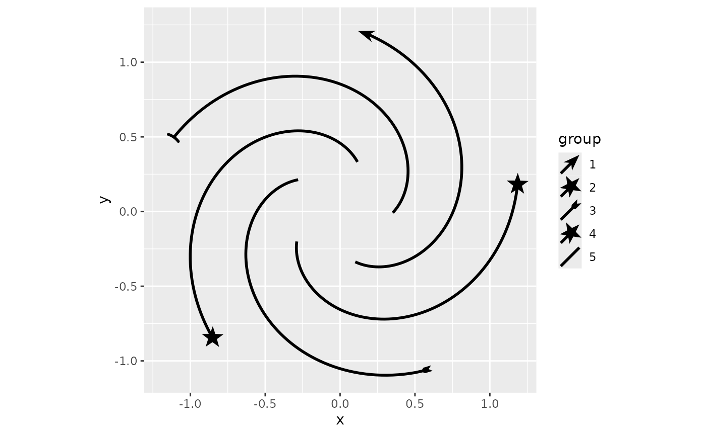
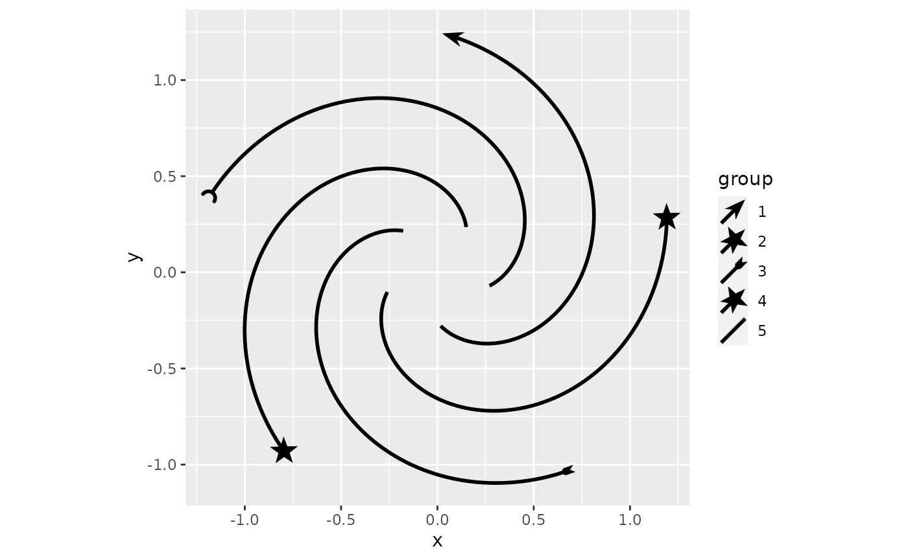
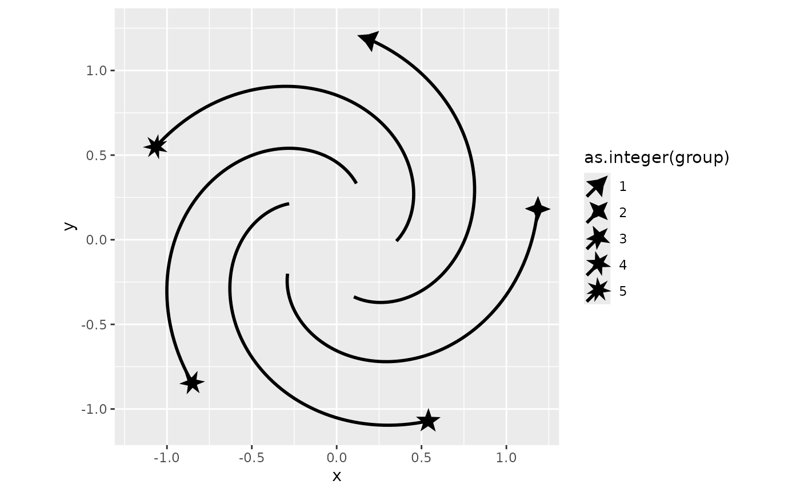

There are a few ways in which one can tweak the display of arrow ornaments in ggarrow. This vignette goes through a few methods for making new arrow ornaments, from basic xy-coordinates to function factories and using the ornaments in scales.
New ornaments
In principle, extending ornaments is as straightforward as being able
to construct a polygon in an xy-coordinate matrix with x as
the first column and y as the second column.
my_ornament <- function(n = 5) {
t <- seq(0, 2 * pi, length.out = n * 2 + 1)[-(n * 2 + 1)]
l <- rep(c(1, 0.4), length.out = length(t))
cbind(
x = cos(t) * l,
y = sin(t) * l
)
}We can inspect the coordinates of our new ornament. It is ggarrow’s convention that the line joins the ornament at the (0,0) coordinate. Also, the tip of the ornament is expected to be at the (1,0) coordinate.
orn <- my_ornament(5)
plot_ornament(orn)
You can now use your ornament as the arrow_head,
arrow_fins and arrow_mid arguments. It just
listens to the usual arguments like length_{head/fins/mid},
resect_{head/fins} and mid_place and scales
with the line width (if the length is not an absolute unit).
library(ggarrow)
#> Loading required package: ggplot2
ggplot(data = data.frame(x = c(0, 1)), aes(x = x)) +
geom_arrow(aes(y = c(1, 3)), arrow_head = orn, resect = unit(2, "cm")) +
geom_arrow(aes(y = c(2, 2)), arrow_fins = orn, length_fins = unit(1, "cm")) +
geom_arrow(aes(y = c(3, 1)), arrow_mid = orn, mid_place = c(0.33, 0.66),
linewidth = 2)
Ornament factories
Sometimes, you might want to know more about the context in which you’re drawing the ornament than can’t be known before plotting. For example, let’s say we wanted to add half the star we made above an arrowhead. When doing this it is immediately clear that the connection with the line looks awful.
half_star <- orn[orn[, "y"] >= 0, ]
ggplot(data.frame(x = c(0, 1), y = c(1, 1)), aes(x, y)) +
geom_arrow(arrow_head = half_star, linewidth = 3)If we know the linewidth in advance, you might nudge it manually.
Because the default length_head is 4 and the we set the
linewidth is 3, the arrowhead will get a size of 3 * 4 = 12 mm.
magic_number <- 0.7528125
half_star[, "y"] <- half_star[, "y"] - (1.5/12) * magic_number
ggplot(data.frame(x = c(0, 1), y = c(1, 1)), aes(x, y)) +
geom_arrow(arrow_head = half_star, linewidth = 3)
The way to solve this, is to use a function factory. This method is much more involved, so be forewarned. First, if we just write a function that does as we did before, you might notice a tiny star at the end of the line as a few pixels.
half_star <- function(n = 5) {
ornament <- my_ornament(n)
function(...) {
half <- ornament[ornament[, "y"] >= 0, ]
half
}
}
ggplot(data.frame(x = c(0, 1), y = c(1, 1)), aes(x, y)) +
geom_arrow(arrow_head = half_star(5), linewidth = 3)
That is because the output of the function factory gets interpreted
as millimetres. To be responsive to what length_head is
being passed around, you should multiply your output with the length.
length is one of the parameters that the function produced
by the factory can receive. Doing this gives more reasonable output, but
we can now see that the half-star extends beyond the path’s end.
half_star <- function(n = 5) {
ornament <- my_ornament(n)
function(length, ...) {
half <- ornament[ornament[, "y"] >= 0, ]
half * length
}
}
ggplot(data.frame(x = c(0, 1), y = c(1, 1)), aes(x, y)) +
geom_arrow(arrow_head = half_star(5), linewidth = 3)
To control how much the line should be cut back, you can set the ‘resect’ attribute on your output. For this shape, we should probably resect the line by exactly the length parameter we get. Now the alignment looks as it should.
half_star <- function(n = 5) {
ornament <- my_ornament(n)
function(length, ...) {
half <- ornament[ornament[, "y"] >= 0, ]
half <- half * length
attr(half, "resect") <- length
half
}
}
ggplot(data.frame(x = c(0, 1), y = c(1, 1)), aes(x, y)) +
geom_arrow(arrow_head = half_star(5), linewidth = 3)Lastly, to fix the actual problem we were trying to solve, we can
nudge the y-coordinates by half the linewidth. width is a
parameter the produced function can receive that represents the line
width. Now, it looks like it should.
half_star <- function(n = 5) {
ornament <- my_ornament(n)
function(length, width, ...) {
half <- ornament[ornament[, "y"] >= 0, ]
half <- half * length
half[, "y"] <- half[, "y"] - 0.5 * width
attr(half, "resect") <- length
half
}
}
df <- expand.grid(x = c(0, 1), width = 1:4)
ggplot(df, aes(x, width, linewidth = I(width), group = width)) +
geom_arrow(arrow_head = half_star(5)) +
ylim(0, 5)
Besides width and length, the inner
function can also receive resect. Because functionality
might be expanded in the future, the last argument to the inner function
should be ....
Scales
The discrete scales in ggarrow can take a mixed list of things that may define an arrow. That way, you can just put your own ornaments in a list to have it become part of the scale.
p <- ggplot(whirlpool(5), aes(x, y, group = group)) +
coord_equal()
p + geom_arrow(aes(arrow_head = group), resect = 5) +
scale_arrow_head_discrete(
values = list("head_wings", orn, "fins_feather", orn, "cup"),
)
If you start your function name with the arrow_-prefix,
the ornament can be automatically found if available in the global
environment.
arrow_star <- function(n = 5) {
my_ornament(round(n))
}
p + geom_arrow(aes(arrow_head = group), resect = 1) +
scale_arrow_head_discrete(
values = c("head_wings", "star", "fins_feather", "star", "cup"),
)
While not always very easy to figure out, as different arrowheads are
discrete, one can in theory also apply a continuous scale to
arrows. Please note that I sneaked in a round() in the
function above, this is so that we can demonstrate a continuous scale
with the star.
If we have something about our arrowhead that may vary in number,
like an angle, or some size or in this example, the number of points on
a star (though not truly continuous), we can use
scale_arrow_head_continuous() to map our variable to the
arrowhead. We should give the function we created as the
generator argument. The variable part of our function
argument should be provided as map_arg, and the range of
values it can take on should be provided as range.
p + geom_arrow(aes(arrow_head = as.integer(group)), resect = 5) +
scale_arrow_head_continuous(
generator = arrow_star, map_arg = "n",
range = c(3, 7)
)